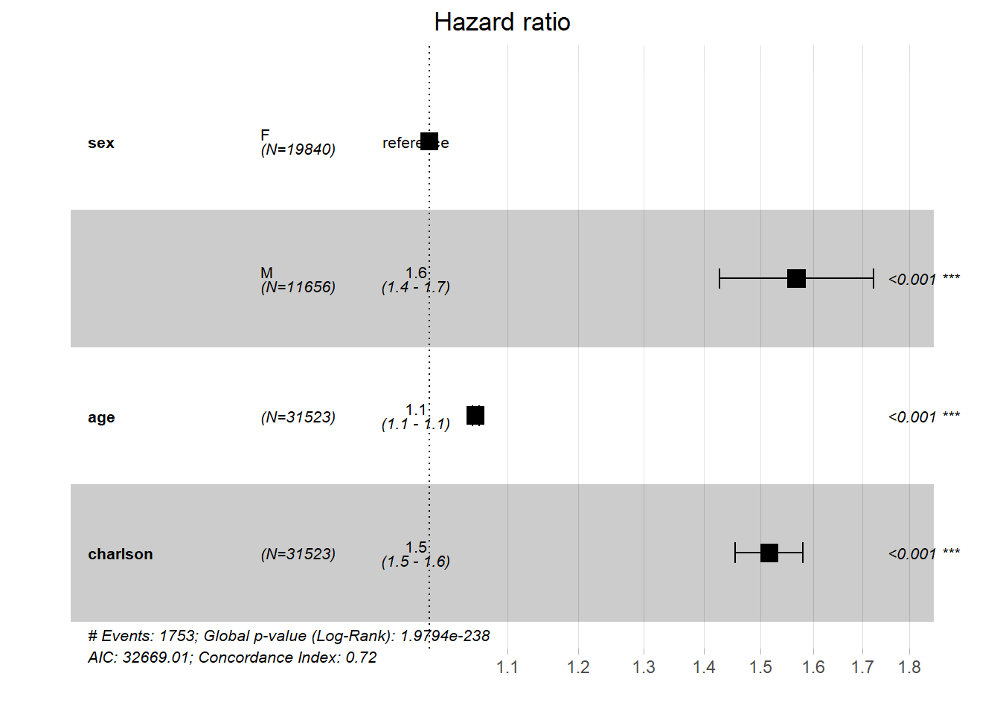

Survival analysis of patients with multimorbidity treated by Family Physicians compared to those treated by Generalists with no vocational training in Family Medicine
Introduction
Residency training in Family Medicine is the gold standard for medical vocational training for Primary Care (PC) and it is expected that residents trained in certified residency programs perform better than untrained physicians when providing care for their patients, being more parsimonious in spending available resources, offering ready and easy access to care for their patients and expanding the scope of their practice by managing a wide range of prevalent health conditions [6].
By training young doctors for the practice of PC it is expected that they will not only develop technical skills making them ready to easily solve common health problems but also learning and incorporating the principles of Family Medicine [7], such as comprehensiveness, continuity of care and patient-centered care [8], into their practice. As Barbara Starfield’s widely known research [9] showed that having a health system strongly funded in the attributes of PC is not only good for the patients, but also for health systems and governments, since it is more efficient by a lower cost. There is a good agreement on how important it is to have a health system with strong PHC, but the way to build it and develop its attributes is still an open field for debate. If the reacently launched Astana Declaration [10] - and its 1978 predecessor Alma Ata Declaration [11] - clearly stated that primary care is the way to achieve Universal Health Coverage and Equity in Health, none of them mentioned Family Medicine as the most suitable medical spcialty to achieve their aims though.
Beyond clinical skills to perform prevention, diagnostics, treatment and palliation, Family Physicians are trained to diagnose and treat some conditions beyond the biomedical spectrum, such as treatment adherence, emotional and mental burden, lack of social and family support or poor self-efficacy [12]. Combining all those domains in the practice of primary care - from biomedical knowledge and clinical reasoning to social, relational and communicational skills - is what makes Family Medicine so difficult to be well done and therefor, very hard to be investigated [13]. This is important for every patient at any level of care, but it is paramount for those patients with Multimorbidity where two or more chronic conditions coexist, leading to all sorts of combinations of symptoms, treatments, outcomes, impairments and doubts about the best way to address each one [14].
Treating only the biomedical aspects of the disease by strictly following therapeutic protocols patients with Multimorbidity are at risk of polypharmacy and serious adverse events, while probably will not have their illness and health demands seen and addressed. Vocational training in Family Medicine tries to promote a health care professional capable of dealing not only with commmon and prevalent health conditions (Hypertension, Diabetes, Heart Failure and Dementia) but also with the complexity that arises when several chronic conditions and personal singular expectations, disabilities and individual and social vulnerabilities coexist in the same patient [15].
For the reason stated above Multimorbidity will be the event of interest in this study that aims to answer the question “Do patients treated by trained family physicians live longer than those treated by physicians with no special training?”.
Methodology
In this preliminary study a Survival Analysis was performed comparing Generalists (medical primary care providers with no vocational training in Family Medicine) and Family Physicians (those who have been trained as - or are currently training to become - Family Physicians). The survival of patients with multimorbidity, defined as the presence of two or more chronic conditions in the same patient, was measured by the number of days between the day the patient was diagnosed as having the second chronic condition until the last day he/she was seen at the clinic (censoring) or until the day of death (outcome).
Multimorbidity was cathegorized as having two or more chronic conditions chosen by the domains listed by the Charlson[3] and Elixhauser[4] Comorbidity Indexes, summarising 29 chronic health conditions. Eligible patients were those 18 years of age or older and those who had had at least two consultations at the PHC clinic during the period of January 2013 until December 2018.
For this analysis we considered only those patients who were seen exclusively by Family Physicians (exposure) or by Generalists (control). Patients seen by both medical cathegories or had only one consultations were excluded from the analysis.
Survival analysis - first approach
load("D:\\extracao\\roteiros\\sobrevida\\amostra.RData")
load("D:\\extracao\\roteiros\\sobrevida\\amostra1.RData")
load("D:\\extracao\\roteiros\\sobrevida\\amostra2.RData")
amostra <- amostra %>% filter(FP == 1 | FP == 0)First model - Age
The first model takes age as the only independent variable in the model and, as it was supose to happen, for every year gained in life there is a 5% increament of the risk of death, i.e. a HR 1.056 (1.052; 1.06).
## Call:
## survival::coxph(formula = surv_obj ~ age, data = amostra)
##
## n= 31111, number of events= 1760
## (412 observations deleted due to missingness)
##
## coef exp(coef) se(coef) z Pr(>|z|)
## age 0.054523 1.056037 0.002036 26.79 <2e-16 ***
## ---
## Signif. codes: 0 '***' 0.001 '**' 0.01 '*' 0.05 '.' 0.1 ' ' 1
##
## exp(coef) exp(-coef) lower .95 upper .95
## age 1.056 0.9469 1.052 1.06
##
## Concordance= 0.669 (se = 0.007 )
## Rsquare= 0.024 (max possible= 0.664 )
## Likelihood ratio test= 749.7 on 1 df, p=<2e-16
## Wald test = 717.5 on 1 df, p=<2e-16
## Score (logrank) test = 724.3 on 1 df, p=<2e-16Second model - Age and sex
By adding information aboout Sex in the model the results show a well know pattern, where men tend to have a 60% higher risk for death - HR 1.664 (CI 95% 1.515; 1.828) - when compared to women. The HR for Age remains the same. This result doesn’t add much information to the model, since it is well known that women tend to live longer than men.
## Call:
## survival::coxph(formula = surv_obj ~ sex + age, data = amostra)
##
## n= 31086, number of events= 1753
## (437 observations deleted due to missingness)
##
## coef exp(coef) se(coef) z Pr(>|z|)
## sexM 0.509422 1.664329 0.047956 10.62 <2e-16 ***
## age 0.055215 1.056768 0.002076 26.59 <2e-16 ***
## ---
## Signif. codes: 0 '***' 0.001 '**' 0.01 '*' 0.05 '.' 0.1 ' ' 1
##
## exp(coef) exp(-coef) lower .95 upper .95
## sexM 1.664 0.6008 1.515 1.828
## age 1.057 0.9463 1.052 1.061
##
## Concordance= 0.687 (se = 0.007 )
## Rsquare= 0.027 (max possible= 0.662 )
## Likelihood ratio test= 843 on 2 df, p=<2e-16
## Wald test = 797.7 on 2 df, p=<2e-16
## Score (logrank) test = 807.8 on 2 df, p=<2e-16## Warning: Removed 1 rows containing missing values (geom_errorbar).Third model - Age, sex and Charlson Comorbidity Index
The third model adds information about the morbidity burden for every patient eligible for the analysis. As expected, for 1 point at the Charlson Index there is an increase of 51% in the risk of dying.
## Call:
## survival::coxph(formula = surv_obj ~ sex + age + charlson, data = amostra)
##
## n= 31086, number of events= 1753
## (437 observations deleted due to missingness)
##
## coef exp(coef) se(coef) z Pr(>|z|)
## sexM 0.44971 1.56786 0.04816 9.338 <2e-16 ***
## age 0.05654 1.05817 0.00207 27.310 <2e-16 ***
## charlson 0.41625 1.51626 0.02115 19.685 <2e-16 ***
## ---
## Signif. codes: 0 '***' 0.001 '**' 0.01 '*' 0.05 '.' 0.1 ' ' 1
##
## exp(coef) exp(-coef) lower .95 upper .95
## sexM 1.568 0.6378 1.427 1.723
## age 1.058 0.9450 1.054 1.062
## charlson 1.516 0.6595 1.455 1.580
##
## Concordance= 0.717 (se = 0.007 )
## Rsquare= 0.035 (max possible= 0.662 )
## Likelihood ratio test= 1101 on 3 df, p=<2e-16
## Wald test = 1116 on 3 df, p=<2e-16
## Score (logrank) test = 1109 on 3 df, p=<2e-16## Warning: Removed 1 rows containing missing values (geom_errorbar).
Forth model - Age, sex, Charlson Comorbidity Index and Medical specialty
Finally when the information about the kind of physicians tyhat took care of the patient (Family Physician versus Generalists) the result was that if a patient is seen by a Fammily Physician there is a two times the chance of dying when compared to those patients seen by Generalists (HR 2.082 - 95% Ci 1.865; 2.325). That information contradicts what the theoretical model presented in the introduction, i.e., that Family Physicians would be more capable of providing better care for their patients, mainly for those with Multimorbidity.
## Call:
## survival::coxph(formula = surv_obj ~ sex + age + charlson + FP,
## data = amostra)
##
## n= 31086, number of events= 1753
## (437 observations deleted due to missingness)
##
## coef exp(coef) se(coef) z Pr(>|z|)
## sexM 0.435744 1.546113 0.048196 9.041 <2e-16 ***
## age 0.056113 1.057717 0.002064 27.189 <2e-16 ***
## charlson 0.395633 1.485324 0.021196 18.666 <2e-16 ***
## FP 0.733429 2.082208 0.056281 13.031 <2e-16 ***
## ---
## Signif. codes: 0 '***' 0.001 '**' 0.01 '*' 0.05 '.' 0.1 ' ' 1
##
## exp(coef) exp(-coef) lower .95 upper .95
## sexM 1.546 0.6468 1.407 1.699
## age 1.058 0.9454 1.053 1.062
## charlson 1.485 0.6733 1.425 1.548
## FP 2.082 0.4803 1.865 2.325
##
## Concordance= 0.728 (se = 0.007 )
## Rsquare= 0.039 (max possible= 0.662 )
## Likelihood ratio test= 1250 on 4 df, p=<2e-16
## Wald test = 1310 on 4 df, p=<2e-16
## Score (logrank) test = 1314 on 4 df, p=<2e-16## Warning: Removed 1 rows containing missing values (geom_errorbar).The expected results for the last model would be “no difference” between the two groups. There are two main reasons for that. The first one was that several variables were not included in the model, such as individual, social and clinical differences among participants. The second reason was that it would be very unlikely - presumptious, at least - that 3 or 4 years of contact between patients and Family Physicians would make a difference in terms of longevity. Less blood tests, less drugs prescribed, less referals to secondary care and some hospital admissions avoided would be fairly expected, but regarding to longevity, if any difference would happened to exist between Generalists and Family Physicians, it would be small and probably with no statistical significance. However the results point towards the opposite direction, showing a big difference between the two groups in favor of Generalists. One short answer to that would be that Family Physicians are not treating their patients so well or maybe they are being neglectful and providing poorer quality care by prescribing less medications, requiring fewer blood tests, and refering less to secondary care services. That could be a reasonable answer, but the still we would see a small difference, probably with no statistical significance.
The question that must be stated here is “why such a big difference between the two groups in favor of Generalists?”. This question must be addressed by exploring three different sources of errors in epidemiological studies: information bias, selection bias and confounding.
Information Bias or Selection Bias: Which chronic conditions Primary Care doctors are taking care of in Rio de Janeiro?
Differences in the prevalence of Chronic Health Conditions among patients treated by Family Physicians and Generalists in Primary Care in Rio de Janeiro.
In order to explore the relationship of Primary Care Physicians (Generalists and Family Physicians) with some chronic conditions studied here, some logistic regression models were run, having the presence or absence of each condition as dependent variable and being a Family Physician or a Generalist as the main explanatory variable. This variable is a continuous linear variable ranging from 0 (every consultation with Generalist) to 1 (every consultation with Fammily Physicians). Intermediate values represent the proportion of consultations with FP, i.e. a patient with “0.83” means that 83% of the consultations were with FP. This happens due to the turnover of doctors at the PC clinics in Rio. In the sample studied here we have some Family Health Teams that started with Generalists in 2013 and before 2018 a Family Physician occupied the position.
The idea here is to see if by being treated by a Family Physician a patient has a higher or lower chance of being diagnosed with each of the 29 chronic conditions of interest.
Odds ratio to be diagnosed with a chronic condition
In table 1 we can see the odds for a patient to be diagnosed with a specific chronic condition when treated by a Family Physician compared to patients treated by Generalists. Generalists are the reference and every odds ratio represent the increment or decrement for a patient to be diagnosed with that specific condition.
| Diseases | OR | CI |
|---|---|---|
| Hypertension | 0.84 | 0.83 - 0.86 |
| Complications related to Hypertension | 0.97 | 0.88 - 1.06 |
| Dyslipidemia | 0.39 | 0.36 - 0.42 |
| Diabetes without chronic complication | 0.89 | 0.86 - 0.91 |
| Diabetes with chronic complication | 0.95 | 0.86 - 1.05 |
| Peptic ulcer disease, excluding bleeding | 1.21 | 0.9 - 1.61 |
| Anemia | 1.05 | 0.94 - 1.18 |
| Alcohol abuse | 2.49 | 2.22 - 2.8 |
| Illicit drugs abuse | 2.8 | 2.45 - 3.19 |
| Psychosis | 1.47 | 1.34 - 1.62 |
| Depression | 1.39 | 1.31 - 1.48 |
| Hypothiroidism | 1.25 | 1.16 - 1.35 |
| Cardiac arrhythmias | 1.61 | 1.45 - 1.77 |
| Coagulopathy | 1.23 | 0.92 - 1.63 |
| Rheumatoid arthritis/collagen vascular diseases | 1.42 | 1.26 - 1.59 |
| Other neurological disorders | 1.22 | 1.12 - 1.33 |
| Ischemic Heart Disease | 1.97 | 1.73 - 2.25 |
| Congestive Heart Failure | 1.97 | 1.82 - 2.14 |
| Peripheral vascular disorders | 2.87 | 2.43 - 3.39 |
| Cerebrovascular disease | 1.63 | 1.5 - 1.76 |
| Dementia | 1.66 | 1.49 - 1.85 |
| Chronic pulmonary disease | 1.41 | 1.32 - 1.5 |
| Paralysis | 1.21 | 0.95 - 1.54 |
| Renal failure | 2.17 | 1.94 - 2.42 |
| Lymphoma, Leukemia and Solid tumour without metastasis | 1.69 | 1.56 - 1.83 |
| Mild liver disease | 1.42 | 1.23 - 1.62 |
| Severe liver disease | 1.64 | 1.01 - 2.61 |
| Metastatic cancer | 1.69 | 1.56 - 1.83 |
| AIDS/HIV | 1.59 | 1.44 - 1.76 |
The differences are very significant and point towards an interesting pattern: Diabetes, dyslipidemia or hypertension - the most prevalent chronic conditions in Rio de Janeiro - are more likely to be diagnosed by a Generalist, while not so common and somewhat more complex chronic conditions, i.e. Alcohol abuse, Psychosis, Congestive Heart Failure, Dementia and Renal failure, are way more likely to be diagnosed by Family Physicians.
After finding those variations among Family Physicians and Generalists in making the diagnosis of several chronic conditions, age and sex were introduced in the models as the main risk factors for most of the conditions studied here.
Adjusted for age and sex
In table 2 we can see that the inclusion of those variables increase the effect for some conditions (Ischemic Heart Disease, Congestive Heart Failure and Peripheral vascular disorders) but derceased for others (AIDS/HIV and Illicit drugs abuse).
| Diseases | OR | CI |
|---|---|---|
| Hypertension | 0.85 | 0.83 - 0.87 |
| Complications related to Hypertension | 0.99 | 0.9 - 1.09 |
| Dyslipidemia | 0.39 | 0.35 - 0.42 |
| Diabetes without chronic complication | 1.22 | 0.9 - 1.62 |
| Diabetes with chronic complication | 0.9 | 0.88 - 0.93 |
| Peptic ulcer disease, excluding bleeding | 0.97 | 0.87 - 1.08 |
| Anemia | 1.09 | 0.97 - 1.21 |
| Alcohol abuse | 2.42 | 2.15 - 2.71 |
| Illicit drugs abuse | 2.61 | 2.29 - 2.96 |
| Psychosis | 1.46 | 1.33 - 1.6 |
| Depression | 1.44 | 1.36 - 1.54 |
| Hypothiroidism | 1.32 | 1.23 - 1.43 |
| Cardiac arrhythmias | 1.66 | 1.5 - 1.83 |
| Coagulopathy | 1.26 | 0.94 - 1.66 |
| Rheumatoid arthritis/collagen vascular diseases | 1.48 | 1.31 - 1.67 |
| Other neurological disorders | 1.22 | 1.11 - 1.33 |
| Ischemic Heart Disease | 2.03 | 1.77 - 2.31 |
| Congestive Heart Failure | 2.07 | 1.91 - 2.25 |
| Peripheral vascular disorders | 3.02 | 2.55 - 3.58 |
| Cerebrovascular disease | 1.7 | 1.56 - 1.84 |
| Dementia | 1.74 | 1.56 - 1.95 |
| Chronic pulmonary disease | 1.44 | 1.35 - 1.54 |
| Paralysis | 1.21 | 0.94 - 1.53 |
| Renal failure | 2.26 | 2.01 - 2.53 |
| Lymphoma, Leukemia and Solid tumour without metastasis | 1.76 | 1.62 - 1.9 |
| Mild liver disease | 1.44 | 1.25 - 1.65 |
| Severe liver disease | 1.63 | 1 - 2.61 |
| Metastatic cancer | 1.76 | 1.62 - 1.9 |
| AIDS/HIV | 1.51 | 1.37 - 1.66 |
But still we see the same pattern in the likelihood of been diagnosed for a chronic condition - Generalists are more likely to diagnose those chronic conditions that are very prevalent, which have treaments based on protocols and which conform to federal policies for screening, diagnosis, treatment and survailance. Family Physicians, in the other hand, tend to diagnose more unprevalent and complex conditions showing a more comprehensive approach in terms of diagnosis.
Poisson distribution
| Diseases | OR | CI |
|---|---|---|
| Hypertension | 0.91 | 0.89 - 0.92 |
| Complications related to Hypertension | 0.99 | 0.9 - 1.09 |
| Dyslipidemia | 0.39 | 0.36 - 0.43 |
| Diabetes without chronic complication | 0.92 | 0.89 - 0.94 |
| Diabetes with chronic complication | 0.97 | 0.88 - 1.08 |
| Peptic ulcer disease, excluding bleeding | 1.22 | 0.9 - 1.62 |
| Anemia | 1.09 | 0.97 - 1.21 |
| Alcohol abuse | 2.4 | 2.14 - 2.69 |
| Illicit drugs abuse | 2.59 | 2.28 - 2.95 |
| Psychosis | 1.46 | 1.33 - 1.6 |
| Depression | 1.43 | 1.35 - 1.52 |
| Hypothiroidism | 1.32 | 1.22 - 1.42 |
| Cardiac arrhythmias | 1.65 | 1.49 - 1.82 |
| Coagulopathy | 1.25 | 0.94 - 1.66 |
| Rheumatoid arthritis/collagen vascular diseases | 1.48 | 1.31 - 1.67 |
| Other neurological disorders | 1.21 | 1.11 - 1.32 |
| Ischemic Heart Disease | 2.01 | 1.76 - 2.3 |
| Congestive Heart Failure | 2.04 | 1.88 - 2.21 |
| Peripheral vascular disorders | 3 | 2.53 - 3.55 |
| Cerebrovascular disease | 1.67 | 1.55 - 1.81 |
| Dementia | 1.69 | 1.51 - 1.89 |
| Chronic pulmonary disease | 1.43 | 1.34 - 1.53 |
| Paralysis | 1.21 | 0.94 - 1.53 |
| Renal failure | 2.24 | 1.99 - 2.5 |
| Lymphoma, Leukemia and Solid tumour without metastasis | 1.74 | 1.61 - 1.88 |
| Mild liver disease | 1.44 | 1.25 - 1.65 |
| Severe liver disease | 1.63 | 1 - 2.61 |
| Metastatic cancer | 1.74 | 1.61 - 1.88 |
| AIDS/HIV | 1.5 | 1.36 - 1.65 |
Using the Poisson distribution the models get better adjusted. In table 3 we can still see the same differences though. Common and simple chronic conditions are more likely to be diagnosed by Generalists, while uncommon and complex chronic conditions are more likely to be diagnosed by trained Family Physicians.
This is an important aspect to be unveiled in the search for evidences of good practice in PC, given that physicians should comprehensively address all health problems that may arise and not only those determined by public policies such as diabetes, dyslipidemia or hypertension.
The information highlighted here showing different patterns of diagnosis between Generalists and Family Physicians make a good hint that both Selection and Information bias are responsible for the extreme differences seen at the survival analysis. If the physician doesn’t see the problem, he/she won’t be able to make the diagnosis and, therefore, fulfill the respective ICD code at the patient’s EMR. Another posibility is that if the doctor see the problem and fill out the code in the EMR, he/she can refer the patient to secondary care, saying that, from now on, the patient will be followed by the specialist. In both situations those patients were not included in this cohort, since the inclusion criteria was “having at least two consultations in the primay care clinic”. In this case we would have both information bias, i.e. doctor doens’t see the problem and is unable to make the diagnosis, and selection bias, i.e. if the diagnosis is made, the patient is refered to secondary care and is no longer followed at the PC setting.
The same situation is discussed in a research about avoidable hospital admissions regarding ambulatory-care sensitive conditions in Porto Alegre, Brazil, where having higher scores at the PCATool didn’t make much difference in the survival to the first hospital admission [16].
If the Family Physician is dealing with more complex patients, not ony low risk patients with high blood pressure, dyslypidemia and diabetes, their patients are more likely to die.
Further steps
- Finish the linkage between EMRs and referals DB and then find the patients that were only seen once at the clinic.
- Finish the linkage between EMRs and hospital admissions DB and then perform a survival analysis having time to the first hospital admissions as main outcome.
References
6 Heyrman J. EURACT Educational Agenda. 2005.https://euract.woncaeurope.org/sites/euractdev/files/documents/publications/official-documents/euract-educationalagenda.pdf
7 Freeman T. McWhinney’s Textbook of Family Medicine. Forth edition. Oxford University Press 2016.
8 Stewart M, Brown JB, Weston W et al. Patient-centered Medicine: Transforming The Clinical Method: Transforming The Clinical Method (Patient-Centered Care Series). Third edition. CRC Press 2013.
9 Starfield B, Shi L, Macinko J. Contribution of Primary Care to Health Systems and Health. The Milbank Quarterly 2005;83. doi:10.1111/j.1468-0009.2005.00409.x
10, et al. Declaration of Astana. Global Conference on Primary Health Care. 2018.https://www.who.int/docs/default-source/primary-health/declaration/gcphc-declaration.pdf
11 International Conference on Primary Health Care W. Declaration of Alma-Ata. International Conference on Primary Health Care. 1978.https://www.who.int/publications/almaata_declaration_en.pdf
12, et al. Currículo Baseado Em Competências Para Medicina de Família e Comunidade.;66.https://www.sbmfc.org.br/wp-content/uploads/media/Curriculo%20Baseado%20em%20Competencias(1).pdf
13 Starfield B. Threads and yarns: Weaving the tapestry of comorbidity. Annals of Family Medicine 2006;4. doi:10.1370/afm.524
14 Mercer SW, Salisbury C, Fortin M. ABC of Multimorbidity. 2014.https://www.wiley.com/en-us/ABC+of+Multimorbidity-p-9781118383889
15 Valderas JM, Starfield B, Sibbald B et al. Defining Comorbidity: Implications for Understanding Health and Health Services. Annals of Family Medicine 2009;7. doi:10.1370/afm.983
3 Charlson ME, Pompei P, Ales KL et al. A New Method of Classifying Prognostic Comorbidity in Longitudinal Studies: Development and Validation. Journal of Chronic Diseases 1987;40:373–83. doi:10.1016/0021-9681(87)90171-8
4 Elixhauser A, Steiner C, Harris R et al. Comorbidity Measures for Use with Administrative Data. Medical Care 1998;36:8–27. doi:10.1097/00005650-199801000-00004
16 Gonçalves MR, Hauser L, Prestes IV et al. Primary health care quality and hospitalizations for ambulatory care sensitive conditions in the public health system in Porto Alegre, Brazil. Family Practice 2016;33:238–42. doi:10.1093/fampra/cmv051